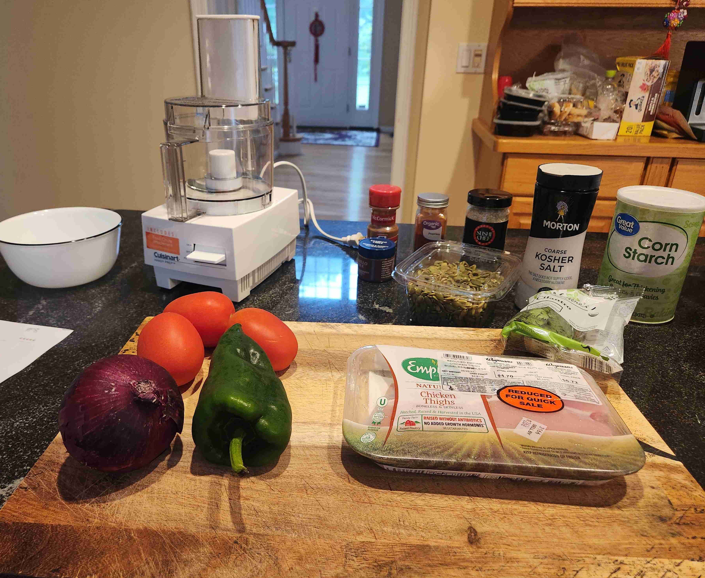
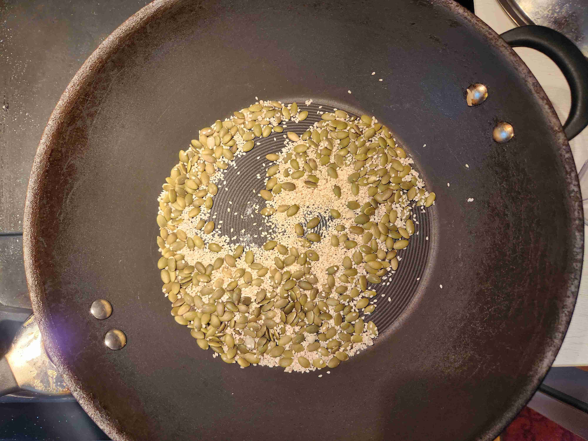
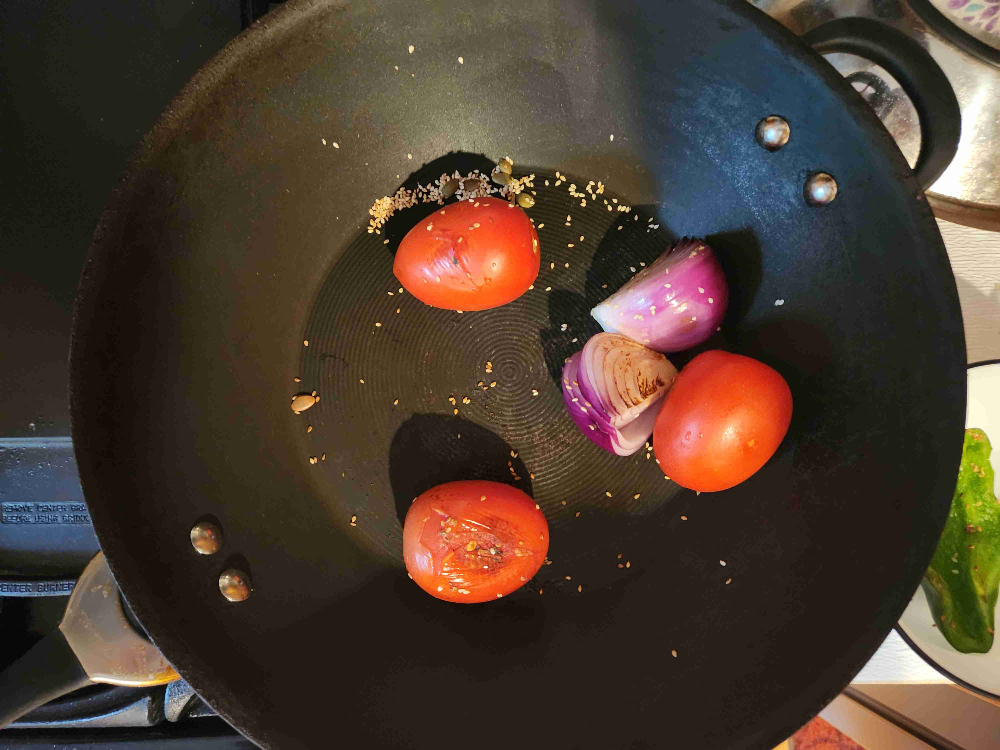
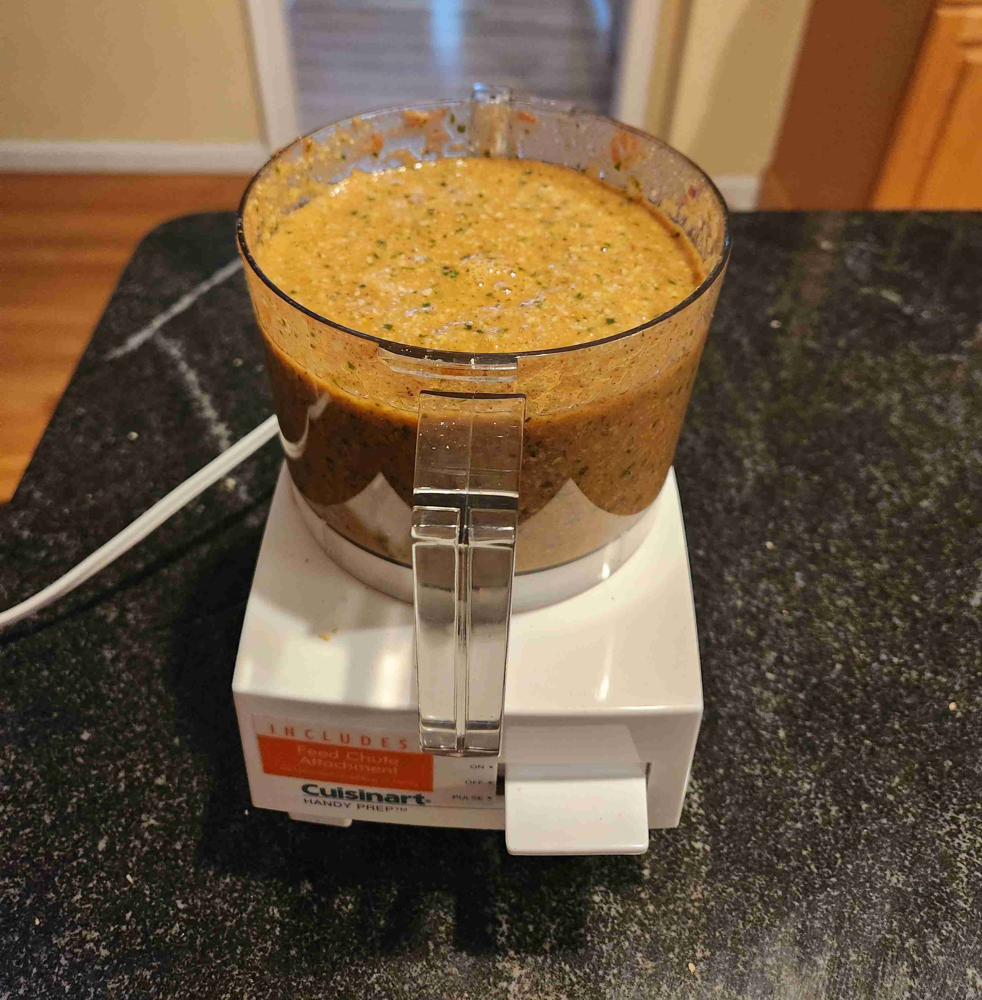
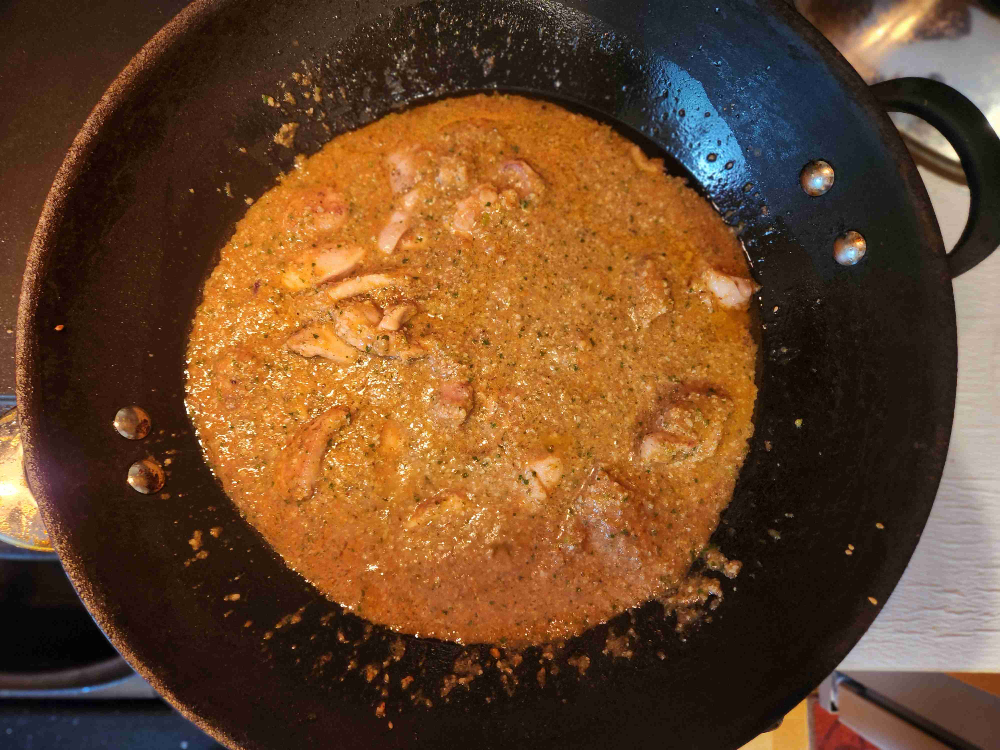
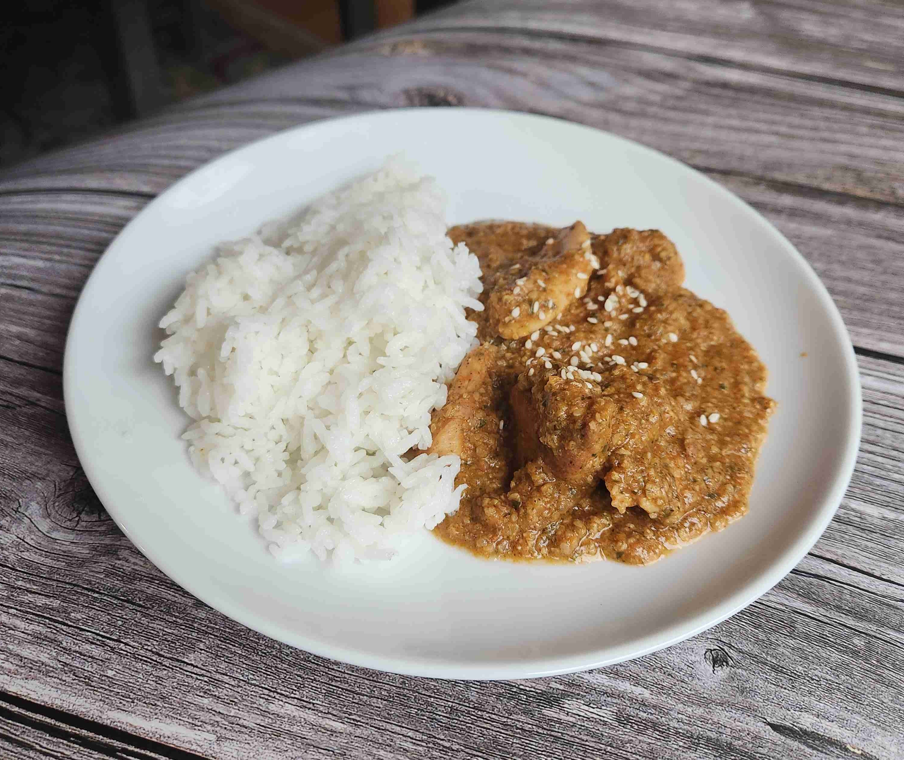
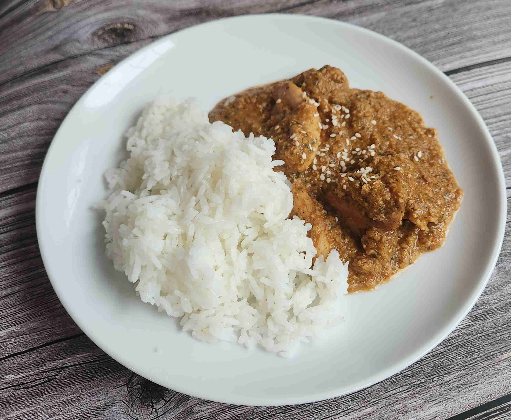

Pepian de Pollo (Guatemala)★
-
 3 servings
3 servings
-
 1.5
hours
1.5
hours
-
 The Foreign Fork
The Foreign Fork
-
 Meat
Meat
-
 Salty
Salty
Cooked on July 16, 2023.
My eigth recipe! This is the first North American (and Latin American) dish I made so far. It was a very interesting dish to make, as it used many ingredients that I have never used before (such as pepitas and sesame seeds). The sauce smelled so delicious throughout the process, especially with the blend of toasted seeds. This is also the first time I used a food processor, which I dug up from the basement of my house.
Rating 9/10, a pretty light and amazing dish, the spices were not too overwhelming and the pumpkin and sesame seeds add a lot of flavor. The chicken was also very tender and juicy, and the sauce was very rich and creamy. I would definitely make this again, but I would probably add more chicken and less broth to make the sauce thicker.
Special equipment: food processor
Cooking
1 lbchicken thigh (cut into bite-sized pieces)1 tbspkosher salt0.25 cuppumpkin seeds (pepitas, untoasted and shelled)0.25 cupsesame seeds (untoasted)0.5tsp ground cinnamon1 tspcorn starch3roma tomatoes0.5red onion0.5chile poblano (or pasilla)0.5 tspchile guajillo powder0.25 tsppaprika0.25 cupcilantro (chopped)2 tspvegetable oil1 cubechicken bouillon1food processor

In a wok, add oil and head on medium heat. Then, add the chicken and salt and cook until browned, about 5 minutes. Remove the chicken from the wok and set aside.
In a pot on the side, boil 1 cup of water and mix in the chicken bouillon. Stir until the bouillon is dissolved, then set aside.
After the chicken is cooked, toast the pumpkin seeds and sesame seeds in the wok for 10 minutes or until brown on each side. Put the seeds all into the food processor, pulse until finely ground. Remove from the processor.

Add the roma tomatoes, onion, and chile poblano to the wok and char until browned, about 5 minutes. Remove from the wok and put into the food processor with the cilantro. Pulse until becomes a sauce.

Make sure not to move the vegetables around too much, as you want them to char.
Add ground cinnamon, paprika, seed mixture, and corn starch into the food processor. Pulse until everything is combined.
Add 1 cup of the chicken broth from the bouillon cubes and add to the food processor. Pulse again until everything is mixed.

Pour the sauce into the wok with the chicken and simmer without a lid for 10 minutes, stirring occasionally. Serve hot with rice and sesame seeds of your choice. Enjoy!


Changes Made to Recipe
Firstly, rather than boiling the chicken and making broth that way, I decided to cook the chicken in a pan to get a better texture and make a richer chicken broth using bouillon cubes. Definitely a better option because boiled chicken just doesn’t taste good!
Second, I could not find dried guajillo or pasilla peppers, but I did find guajillo powder and poblano peppers, which are very similar substitutes. It still came out very well, so it was an okay substitute.
Lastly, I cut down on the chicken broth as I realized that the whole mixture was not going to fit in my small food processor (Which started leaking at one point). So, I cut down on the broth to make the sauce less watery and worked very well.

